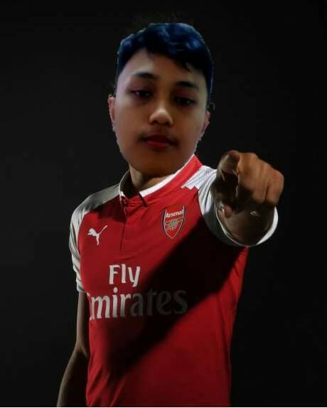

Nama saya Sadidan Ahmad Malik, lahir di Bogor taggal 21 Desember 2000. Saya tinggal di Cimanggu Gang Mantri Guru. Sejak kecil saya bercita-cita menjadi dokter, tapi karena hal-hal lain saya tidak ingin menjadi dokter lagi. Karena saat saya sekolah di SMAKBO, saya tidak mungkin untuk menjadi seorang dokter, soalnya SMAKBO itu sekolah analis kimia. Saya berasal dari keluarga jawa dan sunda, ibu saya adalah orang jawa asli Pekalongan dan ayah saya adalah orang asli Bogor. Dulu saya bersekolah di SDN Pengadilan 3 dan SMPN 4 Bogor.
Hobi saya adalah bermain game, sudah banyak game yang pernah saya mainkan. Contohnya adalah PB (Point Blank), LS (Lost Saga), CS (Counter Strike), Line Let's get rich, Line cookie run, GTA San Andreas, dan ML (Mobile Legend). Saat ini saya hanya bermain game Mobile Legend. Mobile Legend adalah game MOBA di android, bermain dengan 5 orang dalam 1 tim dan melawan tim yang lain. Saya sering bermain game ini karena dapat mengusir kebosanan dan membuat saya berpikir untuk dapat memenangkan tiap match. Hero yang paling saya suka di mobile legend ada banyak, salah satunya adalah alucard. Alucard adalah hero assasin/fighter yang mudah untuk mendapatkan kill jika hero ini sudah memiliki item/barang yang diperlukan.
Saya adalah fans dari club sepak bola inggris, yaitu Arsenal FC. Hobi saya adalah mengoleksi barang-barang atau merchandise apapun yang bertemakan Arsenal. Saya menyimpan banyak sekali foto atau wallpaper dari pemain-pemain Arsenal FC. Saya menjadi penggemar Arsenal sejak kelas 5 SD. Saat itu saya melihat aksi Thierry Henry saat ia menjuarai Premiere League golden trophy bersama Arsenal di tahun musim 2003/2004. Sejak saat itu saya mulai meyukai Arsenal FC dan mulai menonton tiap pertandingannya. Saat Arsenal terpuruk, saya tetap menjadi pendukung setia dari Arsenal. Hingga saat ini saya masih tetap menjadi fans klub asal London Utara itu.